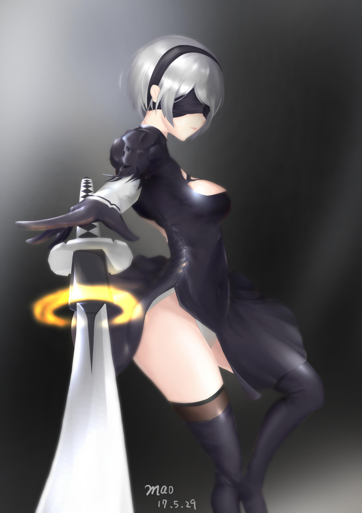
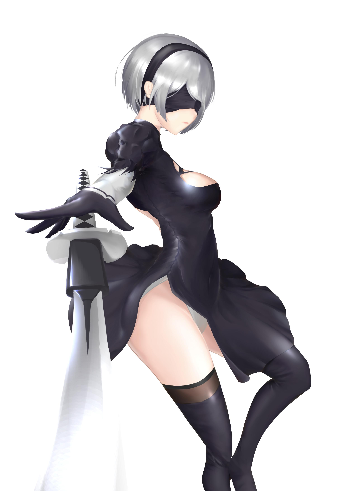

<div id="article_content" class="text-paragraph article_container">連續好幾天都在奮鬥這張圖<div>算上這兩個月學到東西的總結吧</div><div>主要是透視上的研究</div><div>上色方面怪怪的還請包涵</div><div>.</div><div>不囉嗦上圖吧!</div><div></div><div><br></div><div><br></div><div>有些細節我就不刻啦</div><div>(望向那些花紋</div><div>主要是因為很久沒畫完整的圖，好累QAQ</div><div>畫完突然覺得自己畫出來的跟理想畫風越走越遠</div><div>救救我RRRrr</div><div><br></div><div><br></div><div>總之，喜歡的話還請訂閱小屋!或給個GP</div><div><br></div><div>想追蹤比較多日常還請走:<a href="https://www.facebook.com/Bushyeyebrowscat/" target="_blank">專頁</a></div><div><a href="https://www.facebook.com/Bushyeyebrowscat/" target="_blank">帽捲maochinn-繪圖坊</a></div><div><br></div><div><a href="https://www.pixiv.net/member.php?id=6856401" target="_blank">P站</a></div><div><a href="https://www.pixiv.net/member_illust.php?mode=medium&illust_id=63128685" target="_blank">給星星</a>(好像變成給讚甚麼的...</div><div><br></div><div><br></div><div>附一張去背的</div><div></div><script>
$('article.c-text img').load(function () {
// 表格內圖片大於表格寬時，設為 100%
if ($(this).parents('table').length != 0) {
if ($(this).width() >= $(this).parents('td').width()) {
$(this).width('100%');
} else {
$(this).width($(this).width() + 'px');
}
}
});
</script></div>